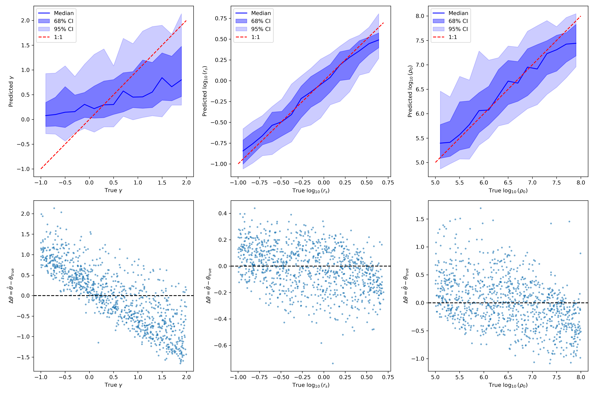
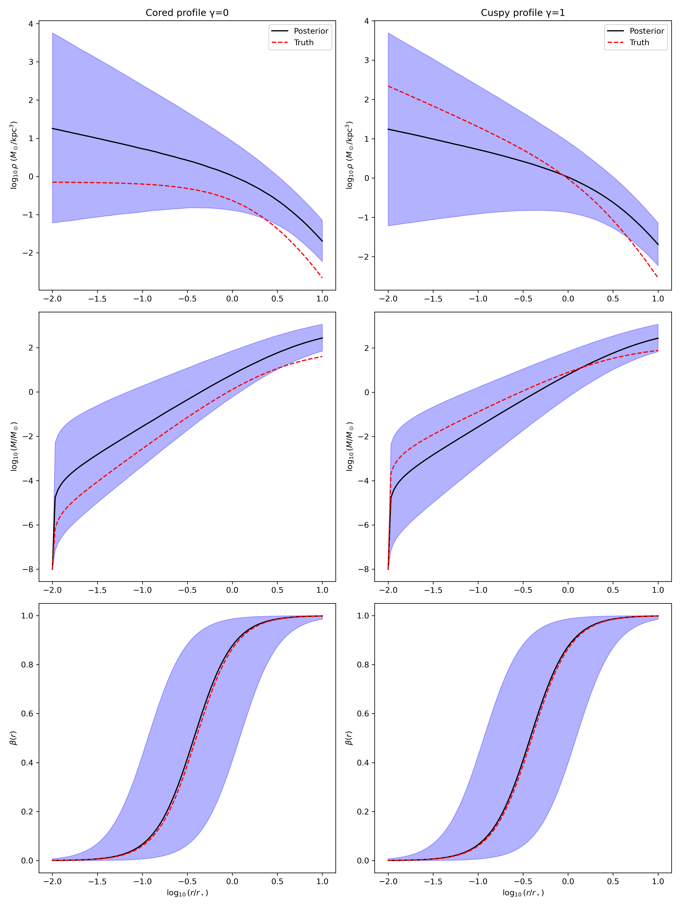
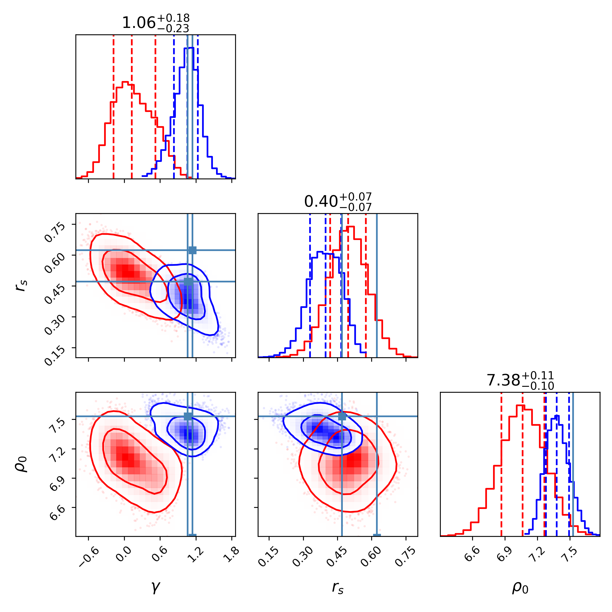
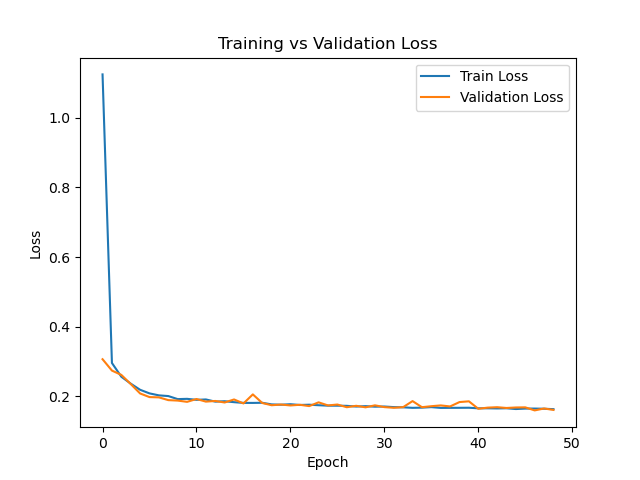

Overview
Reproducing GNN-based Inference of Dark Matter Density Profiles explores how graph neural networks (GNNs) can infer the dark matter density profiles of dwarf galaxies from stellar kinematic data. We reproduced the pipeline introduced by Nguyen et al. (2022), validating their results and investigating reproducibility of astrophysical parameter inference using both a scratch-built and library-based GNN.
Problem
Traditional astrophysical methods like Jeans modeling rely on assumptions such as dynamical equilibrium and isotropy, which can introduce degeneracies and limit accuracy. This makes it challenging to precisely recover dark matter parameters from stellar phase-space data. Recent advances in graph neural networks provide an opportunity to extract higher-order correlations by modeling stars as graph nodes and their kinematic relationships as edges.
Solution
- Implemented a scratch-built GCN in PyTorch with two GCNConv layers.
- Used PyTorch Geometric to build a GNN + normalizing flow pipeline for posterior inference.
- Benchmarked results against a spherical Jeans solver for classical comparison.
- Generated training, validation, and test datasets using StarSampler.
Implementation
We trained on 80,000 simulated galaxies and validated on 10,000, with an additional 10,000 for testing. Optimization used AdamW and Adam optimizers for the GCN and normalizing flow respectively. Key hyperparameters included:
- GCN: 2 layers × 64 hidden units, ReLU activations, global mean pooling
- Normalizing Flow: MAF with 5 coupling layers, 128 hidden units each
- Early stopping based on validation MSE
Results
- Scratch GNN: Successfully recovered parameters rs and ρ0; less accurate on γ due to its role in the exponent.
- GNN + Flow: Achieved posteriors consistent with published contours, reducing errors by ~2x compared to Jeans analysis.
- RMSE (10k test galaxies): γ = 0.18 vs 0.35 (Jeans), log rs = 0.12 vs 0.22, log ρ0 = 0.15 vs 0.28.
- Credible intervals were well-calibrated, especially near the stellar half-light radius.
Scratch GNN Parameter Recovery
Normalizing Flow Posterior Inference
Jeans Analysis Comparison
Training vs Validation Loss
Impact
This project demonstrates that GNN-based inference significantly outperforms classical Jeans modeling for recovering dark matter density profiles. Beyond validation, our results highlight the reproducibility challenges of deep learning in astrophysics, emphasizing the influence of hyperparameters and model choices.
Tech Stack
Python · PyTorch · PyTorch Geometric · StarSampler · GNNs · Normalizing Flows